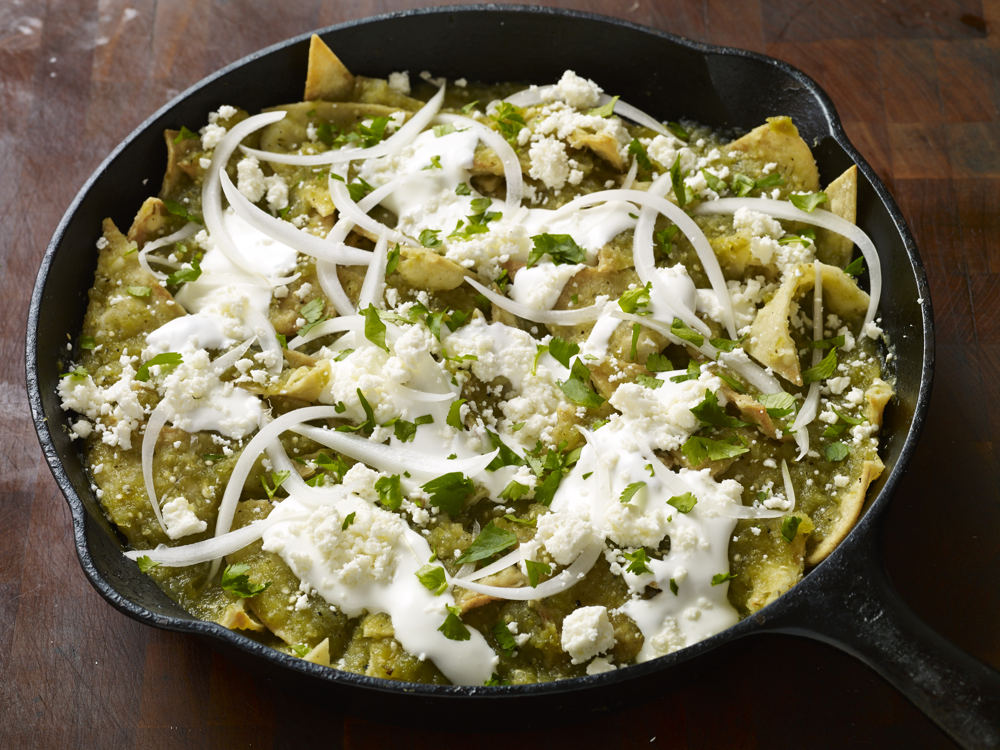

Green Chilaquiles

Description
Chilaquiles are a traditional Mexican dish of fried tortillas bathed in green or red salsa (depending on the region) until tender.
Chilaquiles are most commonly eaten at breakfast time.
Cooking time: 45 minutes
Servings: 6
Ingredients
- 18 5" corn tortillas
- 2 pounds green tomatillos husked and rinsed
- 1/2 of a large white onion
- 1 or 2 serrano or jalapeño chiles
- 1 garlic clove
- 2 or 3 cilantro sprigs
- 2 cups of vegetable or chicken broth
- 3 tablespoons vegetable oil plus more for brushing tortillas
To Garnish:
- 1/2 cup onion thinly sliced
- 1/4 cup of cilantro chopped
- 1/2 cup queso fresco or cotija or substitute with Farmer's cheese or mild feta, crumbled
- 1/4 cup mexican cream
Steps
To prepare the tortillas:
- Heat the oven to 300 degrees
- Cut the tortillas into 2-inch, bite sized pieces
- Lightly brush with oil, sprinkle salt
- Set them on a baking tray and bake in the oven until crispy, about 15 to 20 minutes
- Let the pieces cool
Alternately, you can fry the tortilla pieces
To prepare the tomatillo sauce:
- Preheat oven to 350 degrees
- Place the tomatillos, onions, garlic and serrano chiles in a bowl
- Add 1 tablespoon of vegetable oil and rub all the ingredients.
- Lay the ingredients in a baking tray, sprinkle with salt
- Bake until the tomatillos are soft and plump and all the ingredients look charred
- Let the ingredients cool
- Add the charred vegetables, the cilantro and the broth to a blender and mix well
- Heat a pan over medium heat, adding one additional tablespoon of oil
- When the oil is hot, add the sauce from the blender and finish cooking over medium heat for about 10 minutes
- Season to taste
To serve:
- When the sauce is hot, quickly but carefully add the tortillas
- Stir the tortillas into the mixture so that they are fully coated with the sauce
- Serve the tortillas and salsa in a large platter
- Garnish with the sliced onions, crumbled mexican cheese, drizzle with the cream
Homepage